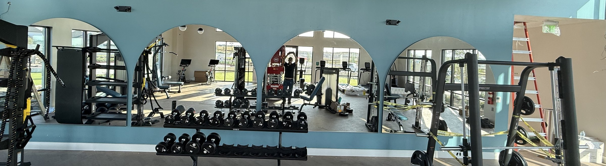

SERVING BOERNE + SAN ANTONIO
Commercial & residential glass in Boerne and San Antonio.
Precision installed glass for homes, storefronts, offices, and urgent repairs. Master Glass Solutions brings 40+ years of glass industry experience to Boerne and San Antonio service areas, with clear next steps for residential upgrades, commercial projects, and 24/7 broken-glass support.
For planned projects and urgent glass needs.
JUST COMPLETED · JULY 2026
Patient room sliding glass doors for a San Antonio spine clinic.
Sliding glass door systems with fixed sidelites, fabricated and installed for patient rooms at a San Antonio spine clinic. Clear sightlines for staff, wide barrier-free openings for equipment, and smooth daily operation in a working medical facility.
THE RIGHT GLASS CHANGES THE ROOM
Built around the opening. Guided by the details.
Master Glass Solutions fabricates and installs commercial and residential glass across San Antonio, Boerne, and the Hill Country—storefronts, shower enclosures, mirrors, custom pieces, and 24/7 emergency repair.
Master Glass Solutions pairs project-minded planning with the hands-on precision of skilled glass installation and fabrication. Whether you are refreshing a home, maintaining a property, or building out a business, the work starts by understanding the job—not forcing it into a one-size-fits-all answer.
Meet the standard behind the workSTART WITH YOUR PROJECT
Choose one path. Get the right quote questions.
Residential projects, commercial openings, and emergency glass calls need different details. Start with the route that matches the job so you are not dropped into a blank form.
WHAT WE DO
From first impression to final detail.
Focused services make it easier to find the right answer—and easier for search engines and AI assistants to understand exactly how we help.
Residential glass
Custom glass that brings light, function, and a finished feel to the home.
Commercial glass
Professional glass solutions for offices, retail spaces, properties, and build-outs.
Emergency glass repair
24/7 support when broken glass creates an immediate safety or security concern.
Storefront glass
Glass systems designed to welcome customers while supporting the demands of daily business.
Custom glass
Purpose-built solutions for spaces that deserve more than an off-the-shelf fit.
Window glass replacement
Clearer, safer, better-performing glass for existing residential window openings.
WHY MASTER GLASS SOLUTIONS
Precision is visible. So is the lack of it.
Clean reveals. Thoughtful proportions. Hardware that sits right. A glass project earns its place when the finished result feels quietly inevitable.
- A clear path from project conversation to installation
- Experience across both commercial and residential glass needs
- Fabrication and installation built around the specific opening
- 24/7 support when glass damage cannot wait
Where is Master Glass Solutions located?+
Master Glass Solutions is located at 4949 N Loop 1604 West, Suite 501, San Antonio, TX 78249. The shop works from that San Antonio base and serves Boerne, the Texas Hill Country, and the wider San Antonio metro, including Alamo Heights, Helotes, Schertz, Converse, New Braunfels, Canyon Lake, Wimberley, and Comfort. Call 210-370-3700 to confirm coverage for a specific property address. Emergency glass support is available 24 hours a day, seven days a week.
Which areas do you serve?+
The service-area focus is Boerne and San Antonio, Texas, along with surrounding Hill Country and metro communities such as Alamo Heights, Leon Valley, Helotes, Converse, Schertz, Comfort, Timberwood Park, Canyon Lake, Wimberley, Blanco, New Braunfels, Seguin, La Vernia, Stockdale, Lakehills, Castroville, Lytle, Natalia, and Somerset. Call 210-370-3700 with the property location and the team will confirm coverage and travel time for that address.
What experience does the team bring?+
Master Glass Solutions brings more than four decades of experience in commercial and residential glass installation and fabrication. The founder was raised in the glass trade, trained at the PPG Industries invitation-only architectural metal and engineering school, and was part of its final graduating class. The company was founded in 2004 and carries the insurance required by the state of Texas. That background covers storefront systems, architectural glazing, shower enclosures, mirrors, custom glass, and emergency repair.
MASTER GLASS SOLUTIONS
A precise next step starts with a clear conversation.
Tell us what you're planning, repairing, or replacing. We'll help you identify the right path.